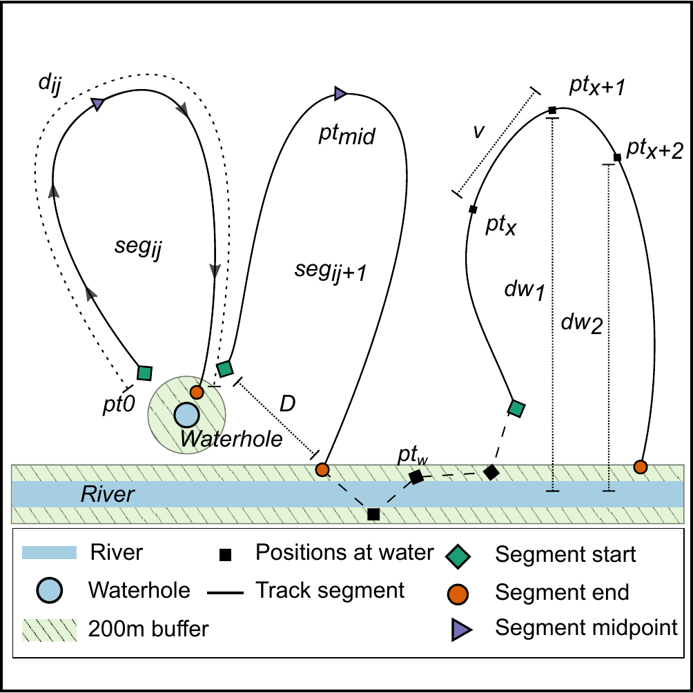
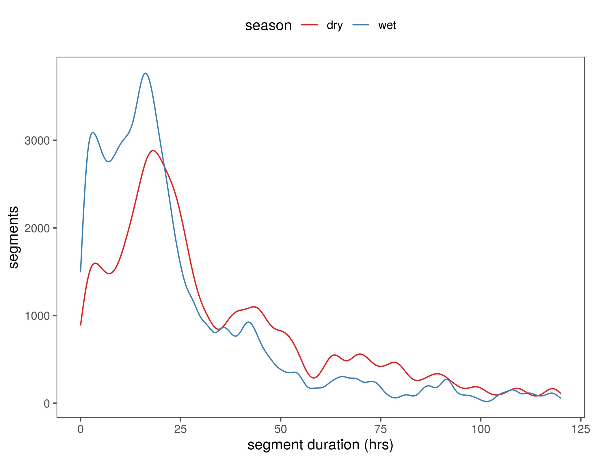

Section 4 Elephant movement between water
Here, we look at elephants movement between water sources, and the speed, collar temperature, and distance to water along these segments.
4.1 Concept: Movement between water

Schematic of elephant track segments between water points. The positions of elephants (black squares, denoted by pt x ) from GPS transmitters on collars within 200 m (green area) of a water source (river: blue rectangle, waterhole: blue circle) were identified as visits to water. For each individual elephant i, we identified track segments j (solid lines, denoted seg ij ) as the path joining all positions chronologically between successive departures from and arrivals at water points. Each segment began as the elephant departed the 200 m zone around water (green rhombi, pt 0 ), and ended at the position where the elephant arrived within a 200 m zone around water (orange circle). Positions at which elephants were continuously within 200 m of a water source (black square, pt w ) are joined by a dashed line, and were not included in the characterization of segments away from water.
We calculated the time-difference between each segment’s start and end points as the segment time (t seg ), and identified the segment’s midpoint (purple triangle, pt 50 ) as the elephant position when half the segment time had elapsed (t seg /2). We computed the distance traveled between successive positions (pt x → pt x+1 ) in a segment as the steplength (v), and the sum of all v in a segment as the distance traveled along the segment (segment distance, d ij ). We calculated the linear distance (segment displacement, D) between each segment’s start and end points. Finally, we obtained the linear distance from each elephant position to the nearest water source (dw), the relative change in distance to water at each position (∆dw = dw 2 -dw 1 ), and the collar temperature at each position (T x ).
4.2 Load libraries
# load libraries
library(dplyr)
library(purrr)
library(lubridate)
library(readr)
library(readxl)
library(glue)
library(stringr)
# spatial
library(sf)
# plotting
library(ggplot2)
library(ggthemes)
# custom funcs
ci = function(x) 1.96*sd(x, na.rm = T)/sqrt(length(x))
# frontiers figure sizes in inches
full = 180/25.4; half = 85/25.44.3 Load elephant data
Here we load elephant data and add a column identifying points which are within 200m of a water source. 200m is approximately the mean movement distance between two elephant positions.
# load elephant data and find points within 200m of water
data = read_csv("data/elephant_data.csv")
data = data %>%
select(id, season, xutm, yutm,
time, v, hour, mindw, temp,
long, lat, angle) %>%
mutate(timenum = as.numeric(time)) %>%
group_by(id) %>%
mutate(waterdiff = c(NA, diff(mindw)),
watervisits = as.numeric(mindw <= 200))What proportion of elphant locations are near water?
# get proportions
data_at_water = count(data, id, water = mindw <= 200) %>%
group_by(id) %>%
mutate(prop_water = n/sum(n)) %>%
filter(water == TRUE)
# write proportions
write_csv(data_at_water, "data/data_prop_at_water.csv")knitr::kable(read_csv("data/data_prop_at_water.csv") %>%
select(id, prop_water) %>%
mutate(prop_water = scales::percent(round(prop_water, 4))))| id | prop_water |
|---|---|
| AM105 | 20.56% |
| AM107 | 28.43% |
| AM108 | 19.14% |
| AM110 | 22.81% |
| AM239 | 19.31% |
| AM253 | 29.88% |
| AM254 | 18.27% |
| AM255 | 22.91% |
| AM306 | 26.62% |
| AM307 | 21.01% |
| AM308 | 15.14% |
| AM91 | 24.86% |
| AM93 | 20.68% |
| AM99 | 21.70% |
4.4 Get time between water visits
How much time has passed between consecutive visits to water?
4.5 Classify arrival and departure from water
Here we identify where the elphant arrives at water (or within 200m, rather), leaves from water, and is at water.
# split by id, arrange by time, identify a change from water visit to non-watervisit points,
# where there's a positive change, ie, status shifts from non-watervisit to watervisit, classify as arrival,
# where a negative change, classify as departure,
# where no change but point is within 200m of water, classify as at water,
# all others where no change classify as segment points
data = data %>%
left_join(data_water) %>%
split(data$id) %>%
map(function(df){
df %>%
arrange(timenum) %>%
mutate(ss = c(NA, diff(watervisits))) %>%
filter(!is.na(ss)) %>%
mutate(behav = case_when(ss == 1 ~ "arrival",
ss == -1 ~ "departure",
ss == 0 & watervisits == 1 ~ "at water",
ss == 0 ~ "segment", T~ as.character(NA)))
})
# bind rows
data <- bind_rows(data)4.5.1 Temperature at arrival
# asked for in review, I believe
# load lme4
library(lme4)
# run model of temperature at arrival against the hour of arrival and season
model_arrival_temp = lmer(temp ~ hour + season + (1|id),
data = filter(data, behav == "arrival"))
# run model summary
if(!dir.exists("data/model_output")){
dir.create("data/model_output")
}
# write model summary
R.utils::captureOutput(summary(model_arrival_temp),
file = "data/model_output/model_arrival_temp.txt",
append = TRUE)Print the model summary.
Linear mixed model fit by REML ['lmerMod']
Formula: temp ~ hour + season + (1 | id)
Data: filter(data, behav == "arrival")
REML criterion at convergence: 76221.9
Scaled residuals:
Min 1Q Median 3Q Max
-2.89970 -0.76294 -0.07497 0.85644 2.63490
Random effects:
Groups Name Variance Std.Dev.
id (Intercept) 0.7959 0.8922
Residual 40.1818 6.3389
Number of obs: 11663, groups: id, 14
Fixed effects:
Estimate Std. Error t value
(Intercept) 26.963889 0.277320 97.230
hour 0.124692 0.009198 13.557
seasonwet 0.103551 0.121320 0.854
Correlation of Fixed Effects:
(Intr) hour
hour -0.383
seasonwet -0.259 0.008How long does each elephant usually remain near water?
# subset points where elephants are at water or arriving
data_water_duration <- data %>%
split("id") %>%
map(function(df){
df %>%
arrange(timenum) %>%
filter(behav %in% c("at water","arrival")) %>%
mutate(watertime = cumsum(behav == "arrival")) %>%
filter(behav == "at water") %>%
group_by(id, watertime) %>%
summarise(duration_at_water = as.numeric(diff(range(time),
units = "hours")))
}) %>%
bind_rows() %>%
ungroup() %>%
group_by(id) %>%
summarise_at(vars(duration_at_water), list(mean=mean, max=max, min=min, ci95=ci))
# write to file
write_csv(data_water_duration, path = "data/data_water_duration.csv")| id | mean | max | min | ci95 |
|---|---|---|---|---|
| AM105 | 6.519551 | 59 | 0 | 0.8266358 |
| AM107 | 6.955215 | 59 | 0 | 0.9149827 |
| AM108 | 6.988697 | 59 | 0 | 0.9245382 |
| AM110 | 6.700152 | 59 | 0 | 0.6767916 |
| AM239 | 6.398075 | 59 | 0 | 0.7073521 |
| AM253 | 7.176663 | 31 | 0 | 0.7363275 |
| AM254 | 7.423451 | 59 | 0 | 0.8019367 |
| AM255 | 7.464367 | 58 | 0 | 0.8823636 |
| AM306 | 6.798591 | 59 | 0 | 1.0460625 |
| AM307 | 7.339652 | 59 | 0 | 0.8722728 |
| AM308 | 6.901941 | 59 | 0 | 1.1070726 |
| AM91 | 7.735387 | 59 | 0 | 0.7235348 |
| AM93 | 5.969936 | 31 | 0 | 0.7193454 |
| AM99 | 7.124211 | 31 | 0 | 0.6603945 |
4.6 Identify segments between water
4.6.1 Count depatures and assign segment id
# arrange by time, remove at water points,
# assign segment id (loop) as cumulative sum of departures.
# segments now begin at departures and end at arrival
data = data %>%
split("id") %>%
map(function(x){
x %>%
arrange(timenum) %>%
filter(behav != "at water") %>%
mutate(loop = cumsum(behav == "departure"))
}) %>%
bind_rows()4.6.2 Summarise segments between water
For each elephant and each segment, find 1. the segemnt duration in hours 2. the segment time in hours 3. the segment proportion in time.
4.6.3 Segments used and unused
# review question, what's different between used and unused segments
ele.used.segments = data %>%
filter(loopdur < 120) %>%
group_by(id, loop) %>%
mutate(nfixes = length(xutm)) %>%
filter(nfixes > 25) %>%
select(-nfixes)
ele.unused.segments = data %>%
filter(loopdur < 120) %>%
anti_join(ele.used.segments)
# plot differences
ele.unused.segments = ele.unused.segments %>% mutate(type = "unused")
ele.used.segments = ele.used.segments %>% mutate(type = "used")
# prep data
ele.segment.data = bind_rows(ele.unused.segments, ele.used.segments)
# show the loop duration differences between used and unused segments
fig_used_segments = ggplot(ele.segment.data)+
geom_boxplot(aes(x = type, y = loopdur, col=type))+
theme_few()+
theme(legend.position = "none")+
ylim(0,120)+
labs(x = NULL, y = "segment duration (hrs)")
# save figure
ggsave(fig_used_segments, filename = "figs/fig_used_segments.png")(#fig:show_fig_used)Loop duration differences between segments used in this paper and those unused.
4.6.4 Collar temperature at water
# get the temperature of eles at water, temp by hour
fig_temp_at_water_hour = ggplot()+
geom_tufteboxplot(data = data_water,
aes(x = as.factor(hour), y = temp,
group = interaction(season, hour), col = season),
median.type = "line", whisker.type = "point")+
scale_colour_brewer(palette = "Set1")+
scale_x_discrete(breaks = c(0, 6, 12, 18, 22))+
scale_y_continuous(breaks = seq(10, 45, 5))+
theme_few()+
theme(legend.position = "top")+
coord_cartesian(xlim=c(0,23), y = c(10,45), expand = T)+
geom_rangeframe(data=data_frame(x = c(1,23), y=c(10,45)), aes(x,y))+
labs(x = "Hour of day", y = "Collar temperature (°C)")
# save figure
ggsave(filename = "figs/fig_temp_at_water.png",
fig_temp_at_water_hour)## Saving 7 x 5 in imageShow the boxplot of collar temperature at water.
4.6.5 Distribution of loop durations
What is the distribution of durations of the used segments?
# what is the 90th percentile of loop durations
# around 120 hours
quantile(data$loopdur, na.rm = T, 0.90)
# diagnostic plot of loop durations
fig_segment_distr = ggplot(data)+
stat_density(aes(x = loopdur, y = ..count.., col = season),geom = "line", position = "identity")+
scale_color_brewer(palette = "Set1")+
scale_y_continuous()+
theme_few()+
theme(legend.position = "top")+
labs(x = "segment duration (hrs)", y = "segments")+
xlim(0,120)
# save figure
ggsave(fig_segment_distr, filename = "figs/fig_segment_distr.png")
4.7 Distance along segments
4.8 Segment metrics
Calculate a number of metrics for each segment: the first and last x-y coords, the season, the time taken for the loop to be completed, the mean speed, the temperature at the halfway point, the mean temperature along the loop, the instantaneous change in temp at the halfway stage.
4.8.1 Calculate segment metrics
# get segment statistics
data_summary = data %>%
filter(loopdur < 120) %>%
group_by(id, loop) %>%
arrange(time) %>%
mutate(nfixes = length(xutm)) %>%
filter(nfixes > 25) %>%
summarise(points = length(xutm),
x1 = first(xutm),
y1 = first(yutm),
x2 = last(xutm),
y2 = last(yutm),
x50 = long[min(which(plyr::round_any(loopprop, 0.05) == 0.5))],
y50 = lat[min(which(plyr::round_any(loopprop, 0.05) == 0.5))],
long_start = first(long),
lat_start = first(lat),
long_end = last(long),
lat_end = last(lat),
season = first(season),
looptime = max(looptime, na.rm = T),
v = mean(v, na.rm = T),
t50 = temp[min(which(plyr::round_any(loopprop, 0.05) == 0.5))],
temp_mean = mean(temp, na.rm=T),
temp_start = first(temp),
temp_end = last(temp),
wvint = first(wvint),
distance = sum(distance, na.rm=T),
maxdw = max(mindw,na.rm = T),
hour_start = first(hour),
hour_50 = hour[min(which(plyr::round_any(loopprop, 0.05) == 0.5))],
hour_end = last(hour),
mdw_start = first(mindw),
mdw_end = last(mindw),
time50 = time[min(which(plyr::round_any(loopprop, 0.05) == 0.5))],
time_start = first(time),
time_end = last(time))4.8.2 Segment displacement
4.8.3 Quantify elephant shuttling
4.8.4 Figure: Distance distributions
Plot a figure of distance distribution per season.
# prepare figure
fig_segment_dist_distr = ggplot()+
stat_density(data = data_summary,
aes(x = distance/1e3, y = ..count../sum(..count..)*2883, lty = season, col = season),
position = "identity", lwd = 0.7, geom = "line")+
geom_rangeframe(data = data_frame(x=c(0,25), y=c(0,20)), aes(x,y))+
scale_colour_brewer(palette = "Set1")+
scale_linetype_manual(values = c(2,1))+
scale_x_continuous(breaks = seq(0,25,5))+
scale_y_continuous(breaks = c(0,10, 20))+
theme_few()+
theme(legend.position = "top", panel.border = element_blank())+
coord_cartesian(xlim = c(0,25))+
labs(x = "Segment distance (km)", y = "# Segments")
# save figure
ggsave(fig_segment_dist_distr, filename = "figs/fig_distance_distribution.png")4.8.5 Figure: Displacement distributions
Plot a figure of displacement distribution per season.
# prepare figure
fig_disp_distr = ggplot(data_summary)+
stat_density(aes(x = displace/1e3, y = ..count../sum(..count..)*2832,
lty = season, col = season),
position = "identity", geom = "line", size = 0.7)+
geom_rangeframe(data = data_frame(x=c(0,10),y=c(0,45)), aes(x,y))+
scale_color_brewer(palette = "Set1")+
scale_linetype_manual(values = c(2,1))+
scale_x_continuous(breaks=seq(0,10,5))+
scale_y_continuous(breaks=c(0,15,30, 45))+
coord_cartesian(xlim=c(0,10), expand = T)+
theme_few()+
theme(legend.position = "top", panel.border = element_blank())+
labs(x = "Segment displacement (km)", y = "# Segments")
# save figure
ggsave(fig_disp_distr, filename="figs/fig_displacement_distribution.png")(#fig:show_displacement_distribution)Distribution of displacement along segments between seasons.
4.9 Figure 5: Distance and displacement
4.9.1 Prepare data
# prepare data
dist.disp <- data_summary %>%
group_by(mdist = plyr::round_any(distance, 500), season) %>%
summarise(mdisp = mean(displace, na.rm = T),
sd = sd(displace, na.rm = T),
n = length(displace)) %>%
mutate(ci = qnorm(0.975)*sd/sqrt(n))# prepare figure
fig_distance_displacement = ggplot()+
geom_rangeframe(data = data_frame(x=c(0,10), y=c(0,5)), aes(x,y))+
geom_segment(aes(x = 0,xend = 10,y=0,yend=10), size = 0.3)+
geom_pointrange(data = dist.disp,
aes(x = mdist/1e3, y = mdisp/1e3, group = season,
ymin = (mdisp-ci)/1e3, ymax = (mdisp+ci)/1e3,
shape = season, col = season),
fill = "white", position = position_dodge(width = 0.8), size = 0.2)+
scale_shape_manual(values = c(21,24))+
scale_linetype_manual(values = c(2,1))+
scale_colour_brewer(palette = "Set1")+
scale_fill_brewer(palette = "Set1")+
scale_x_continuous(breaks=seq(0,10,5))+
scale_y_continuous(breaks=c(0,2.5,5))+
labs(x = "Segment distance (km)", y = "Segment displacement (km)")+
theme_few()+
theme(panel.border = element_blank(), legend.position="none")+
coord_cartesian(xlim = c(0,10), ylim = c(0,5), expand = T)
# save figure
half = 85/25.4; full = 180/25.4
ggsave(fig_distance_displacement, filename = "figs/figure_05_distance_displacement.pdf",
device = pdf(), height = half, width= half)(#fig:show_fig05)Segment displacement (km) between successive visits to water was positively correlated with the distance traveled along the segment (km). Vertical line ranges show 95% confidence intervals around mean values for the dry season (red circles) and wet season (blue triangles), respectively. The solid black line denotes values where displacement = distance.
4.10 Segment dynamics
Here we look at data from segments with a duration of 30 or so hours.
4.10.1 Prepare data
4.10.2 Statistics on segment data
# use quadratic terms and run lmm directly
library(lme4)
loop.terms.stats =
segment_data %>%
select(id, mindw, temp,v, season, loopprop) %>%
tidyr::gather(var, value, -id, -season, -loopprop) %>%
split("var") %>%
map(function(df){
lmer(value ~ I(loopprop^2) + season + (1|id), data = df)
}) %>%
map(function(df){
list(summary(df), car::Anova(df))
})
# flatten and write to fle if required4.11 Figure 6: Segment dynamics
4.11.1 Prepare data
# get hourly speed
segment_data = mutate(segment_data, v2 = v*2)
# prepare data for figure
data_fig = segment_data %>%
ungroup() %>%
select(loopprop, season, mindw, temp, v2) %>%
tidyr::gather(variable, value, -loopprop, -season) %>%
tidyr::drop_na() %>%
group_by(stage = plyr::round_any(loopprop, 0.1),
season, variable) %>%
summarise_at(vars(value), list(mean=mean, sd=sd, length=length)) %>%
mutate(ci = 1.96*sd/sqrt(length),
variable = as.factor(case_when(
variable=="mindw"~"Distance to water (km)",
variable == "temp"~ "Collar temperature (°C)",
variable == "v2"~"Speed (km/h)")))Review: How does speed along a segment compare with speed at the beginning?
4.11.2 Prepare Figure 6
t = c("c","a","b")
fig6list = list()
# make a list of figures
for (i in 1:3){
b <- data_fig %>%
filter(variable == levels(variable)[i])
breaks <- c(pretty(c(b$mean)))
fig6list[[i]] =
ggplot(b)+
geom_point(aes(x = stage, y = mean, col =season,
group = interaction(variable, season), shape = season))+
geom_ribbon(aes(x = stage, ymin = mean-ci, ymax = mean+ci,
fill = season), size = 0.3, alpha = 0.2)+
geom_rangeframe(data = data_frame(x=c(0,1),
y = c(min(breaks), max(breaks))), aes(x,y))+
scale_shape_manual(values = c(21,24))+
scale_colour_brewer(palette = "Set1")+
scale_fill_brewer(palette = "Set1")+
scale_y_continuous(breaks = breaks)+
scale_x_continuous(breaks = c(0,0.5,1),
labels = c("Start", "Midpoint", "End"))+
theme_few()+
theme(legend.position = "none", panel.border = element_blank())+
labs(x = NULL, y = levels(data_fig$variable)[i],
title = paste("(",t[i],")", sep = ""))
}
library(gridExtra)
fig06 = grid.arrange(fig6list[[2]],fig6list[[3]],fig6list[[1]], ncol = 3)
# save figure
half = 85/25.4; full = 180/25.4
ggsave(fig06, filename = "figs/figure_06_segment_dynamics.pdf",
device = pdf(), height = half, width = full)(#fig:show_figure_06)Elephant movement variables along segments between water points at 10% intervals of the segment stage (measured in time): (a) distance to the nearest water source (km), (b) speed (km/h), and (c) collar temperature (°C). Points are separated by season (dry = red circles, wet = blue triangles), and connected by lines. Ninety-five percent confidence intervals around each point are shown (note: CI may be too small to be visible for some points).